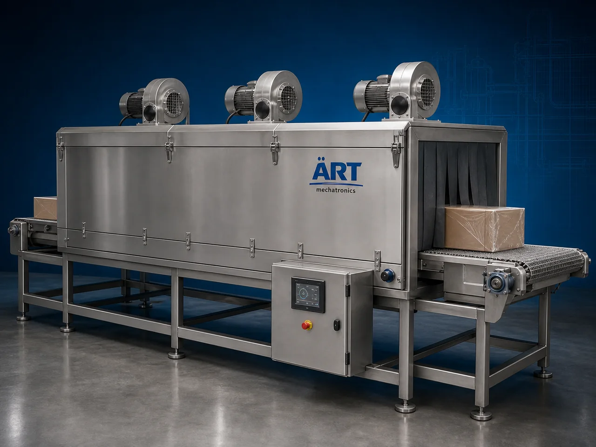

Heat Shrink Tunnel Machine (Automatic Industrial Shrink Wrapping Tunnel System)
A Heat Shrink Tunnel Machine, also known as a Shrink Tunnel Machine, Heat Tunnel Packaging Machine, Shrink Wrapping Tunnel, or Industrial Heat Shrink System, is an advanced packaging solution designed for automatic shrink film heating, shrink wrapping finishing, sleeve wrapping, product bundling, and secondary packaging applications.

About the Heat Shrink Tunnel
Heat shrink tunnel systems are widely used for:
- Shrink wrapping applications
- Product bundling
- Sleeve wrapping
- Multipack packaging
- Retail display packaging
- Secondary packaging automation
The machine improves:
- Packaging appearance
- Product protection
- Shrink wrapping quality
- Production efficiency
- Retail presentation
- Packaging consistency
Industrial heat shrink tunnel machines use:
- High-efficiency heating chambers
- Controlled hot air circulation systems
- Conveyor synchronization mechanisms
- Temperature-controlled heating technology
- PLC and automation systems
to uniformly shrink packaging film around products for tight, attractive, and protective retail packaging.
Heat shrink tunnel machines are widely used in industries such as:
FMCG industries
Food processing industries
Beverage industries
Pharmaceutical industries
Cosmetic industries
Packaging industries
Consumer goods industries
Industrial product industries
where high-quality shrink wrapping and secondary packaging are essential.
The machine is highly suitable for:
- Bottle shrink wrapping
- Carton overwrapping
- Multipack packaging
- Retail product wrapping
- Sleeve wrapping
- Protective packaging applications
ART Mechatronics offers high-performance heat shrink tunnel machines, engineered for continuous industrial operation, uniform shrink wrapping quality, synchronized packaging performance, and reliable long-term automation.
Working Principle of Heat Shrink Tunnel Machine
Film-wrapped products enter shrink tunnel through conveyor system
High-efficiency heaters generate controlled hot air circulation inside tunnel
Heat evenly shrinks film around product surface for tight packaging finish.
Machine handles:
- Shrink films
- Sleeve wraps
- Multipack wraps
- Retail shrink packaging smoothly and continuously.
Conveyor system ensures: Uniform heating exposure Consistent shrink quality Stable product movement throughout shrink process.
Cooling process stabilizes shrink film after heating operation.
Shrink-wrapped products discharged automatically for: Cartoning Retail display Secondary packaging Dispatch operations
Types of Heat Shrink Tunnel Machines
- 1. Electric Heat Shrink Tunnel
Designed for: ✔ Standard shrink wrapping applications
- 2. High-Speed Shrink Tunnel Machine
Suitable for: ✔ Continuous industrial shrink wrapping operations
- 3. Sleeve Wrapping Shrink Tunnel
Uses: ✔ Bottle and multipack bundling systems
- 4. Food Grade Heat Shrink Tunnel
Designed for: ✔ Hygienic food and pharmaceutical packaging systems
- 5. Conveyorized Shrink Tunnel Machine
Suitable for: ✔ Fully automatic packaging line integration
- 6. Fully Automatic Shrink Wrapping System
Designed for: ✔ Complete secondary packaging automation lines
Industries Using Heat Shrink Tunnel Machines
🛒 FMCG Industry Consumer product shrink wrapping and multipack packaging systems 🍃 Food Processing Industry Snack, bakery, frozen food, and ready-to-eat shrink packaging systems 🥤 Beverage Industry Bottle bundling and shrink packaging systems 💊 Pharmaceutical Industry Medicine carton overwrapping and secondary packaging systems 🧴 Cosmetic Industry Cosmetic product wrapping and retail display packaging systems 📦 Packaging Industry Industrial shrink wrapping and protective packaging systems 🏭 Consumer Goods Industry Retail multipack and bundled packaging systems ⚙️ Industrial Product Industry Spare parts and industrial product protective shrink packaging systems
Features & Advantages
- Uniform and attractive shrink wrapping quality
- High-speed continuous shrink tunnel operation
- Controlled hot air circulation system
- PLC and automation control systems
- Supports multiple product sizes and formats
- Improves retail presentation and packaging protection
- Reduces packaging wrinkles and film wastage
- Hygienic food-grade construction available
- Reliable long-term industrial performance
Technical Highlights
Machine Type: Electric shrink tunnel Conveyorized shrink tunnel Sleeve wrapping tunnel Packaging Material: Shrink films Polyolefin films PVC shrink films LDPE shrink films Features: Temperature control system Hot air circulation system Conveyor synchronization Adjustable tunnel speed Uniform heating chamber Packaging Style: Shrink wrap Sleeve wrap Multipack bundle Retail overwrap packaging Automation: Semi-automatic Fully automatic industrial systems
Turnkey Heat Shrink Tunnel Solutions
ART Mechatronics offers: Complete shrink tunnel systems Shrink wrapping and bundling solutions Packaging automation integration systems Conveyor synchronization systems Installation & commissioning After-sales service & AMC
Why Choose Art Mechatronics
Expertise in industrial packaging and automation systems Customized shrink tunnel solutions for multiple industries High-performance and durable heating technology Advanced PLC and conveyor automation systems Proven industrial packaging performance across sectors
Applications
FMCG Packaging Facilities Food Processing Industries Beverage Manufacturing Plants Pharmaceutical Industries Cosmetic Manufacturing Units Industrial Packaging Plants
Get pricing & specs for the Heat Shrink Tunnel
Share the product, target capacity, current process and plant location. These details help our engineers discuss the right machine or line configuration.
One partner, from design to start-up
ART Mechatronics designs, manufactures, installs and commissions your Heat Shrink Tunnel solution with regional presence in India, UAE and Thailand.